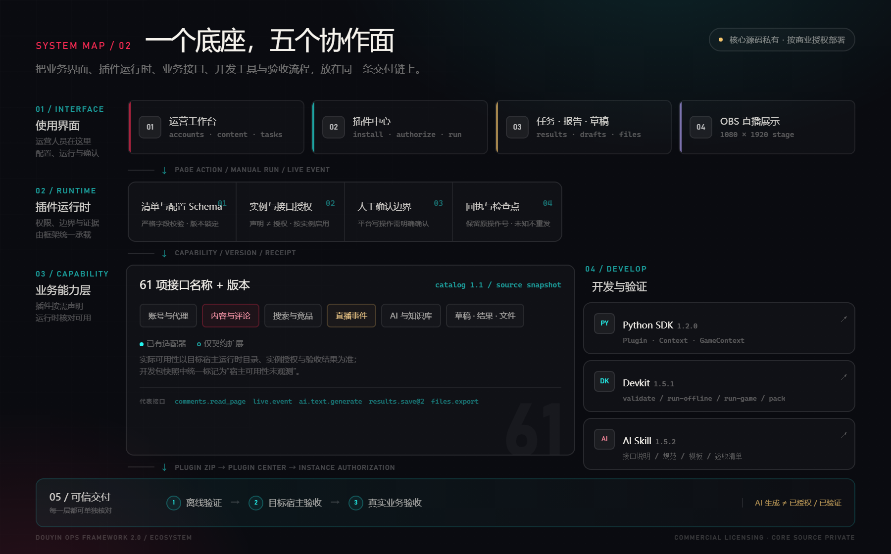
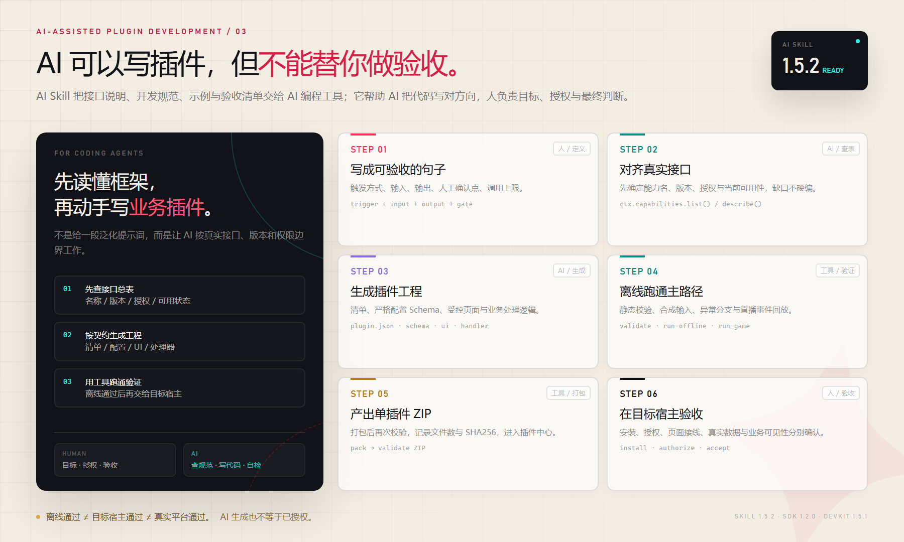
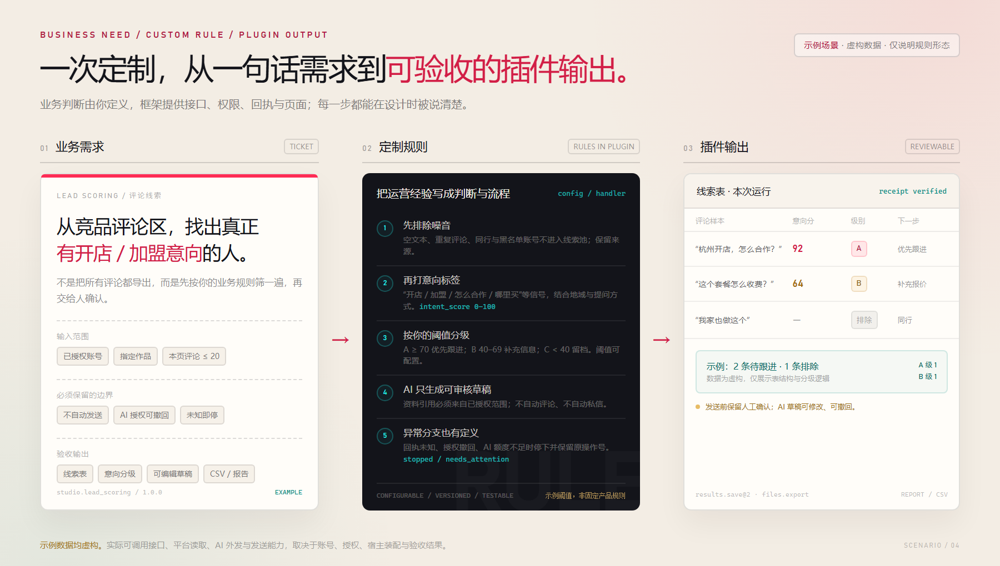
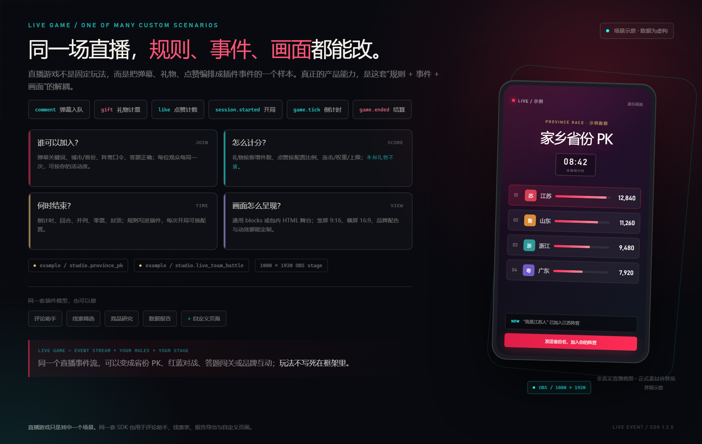
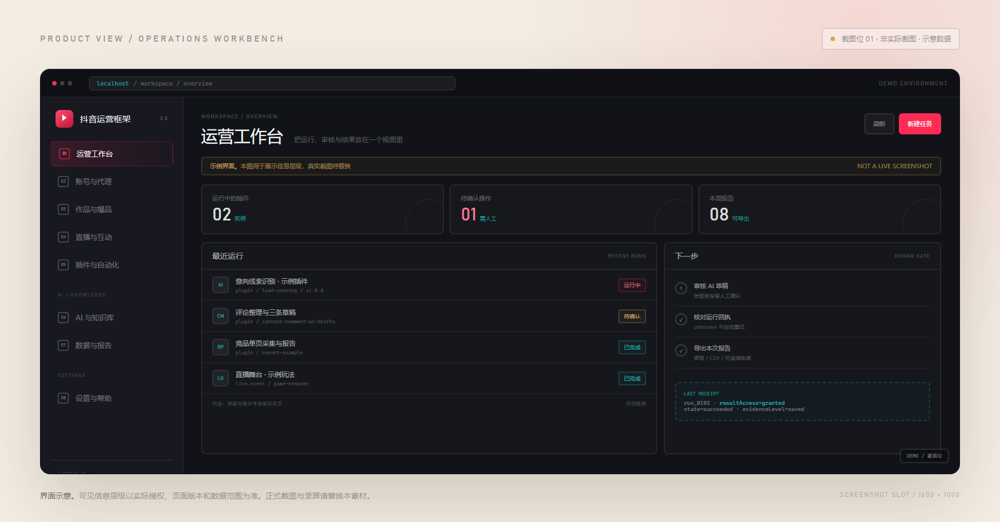
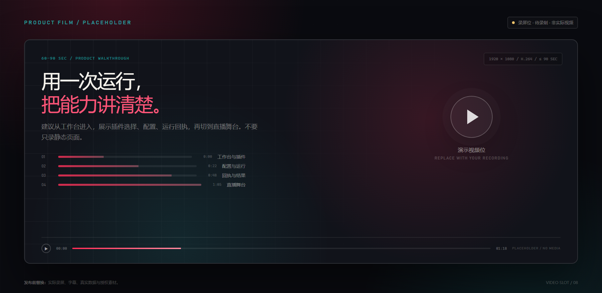

把经验写成规则
谁算高意向、何时停止、如何分级，不再散落在口头经验里。规则进入插件，配置、版本与处理流程都可核对。
一套支持高度自定义插件的抖音运营框架。
从评论、直播到 AI 与报表，把业务判断变成可配置、可验证、可复用的插件能力。
plugin.workspace / lead-scoring
已启用
规则由插件定义，框架负责权限、回执与运行。
当定制工具变成长期需求，真正需要复用的不是某个按钮，而是账号、内容、评论、直播、AI、结果与交付边界。框架把底座收拢，把规则留给你的业务。
谁算高意向、何时停止、如何分级，不再散落在口头经验里。规则进入插件，配置、版本与处理流程都可核对。
评论读取、AI 生成、草稿、结果与文件导出，可以在同一个插件里组合；不是每做一个业务就重接一遍底座。
权限、人工确认、操作回执与检查点由框架承载。交付时能讲清楚：什么已通过，什么仍需目标宿主和真实业务验收。
框架允许在这些层面定制；具体交付范围、接口条件和工作量，按项目确认。
业务人员在工作台配置与确认；插件运行时管理权限和回执；业务能力层提供接口；SDK 与 AI Skill 支撑开发；最后按三层验收交付。

账号、内容、评论、直播、插件、AI、任务与报告的统一入口。
清单、配置 Schema、实例授权、人工确认、回执与检查点。
账号、内容、评论、搜索、直播、AI、知识库、草稿、结果、文件等能力契约。
普通插件与直播游戏插件的公开入口、事件、上下文和错误边界。
doctor、validate、run-offline、run-game、pack，本地完成结构检查与回放。
接口说明、规范、模板与验收清单，让 AI 先读懂框架再写工程。
安装单插件 ZIP、配置实例、授权能力，再进入工作台运行。
插件包内 HTML 舞台，支持 1080×1920 竖屏与通用 blocks 回退。
61 项是“名称 + 版本”的条目数，不是 61 个已验收插件。已有适配器、仅契约扩展和需人工确认的条目要分开看；实际能不能调用，以目标宿主的能力目录、实例授权与验收结果为准。
AI Skill 1.5.2 把框架的真实接口、版本、权限边界、模板和验收清单交给 AI 编程工具。它让生成有方向，但不替代人的目标、授权和最终判断。

按名称、版本、授权与当前可用状态对齐真实能力。缺口就记录缺口，不凭记忆补 API。
用 Devkit 做静态校验、离线运行和直播回放；通过后再打包、安装和目标宿主验收。
平台写操作需人工确认，AI 外发需用途授权和额度。AI Skill 不授予任何运行时权限。
示例：品牌代运营团队想从已授权的竞品评论区里，找到真正有开店、加盟或合作意向的人，减少无效跟进。

comments.read_page
ai.text.generate@2
drafts.create
results.save@2
files.export
示例插件命名、评论、分数和阈值均为虚构。实际接口可用性、AI 外发和平台动作需按账号、授权、宿主装配与验收结果确认。
这些是定制方向，不是开箱即用的六个套餐。每个场景都需要确认账号、数据权限、接口条件和验收标准。
对已授权内容与评论做规则筛选和意向分层，输出线索表、优先顺序与跟进建议。
结合评论、问题、知识库与 AI 用途生成草稿；发送前保留人工确认，适合客服与售前辅助。
复用搜索、竞品保存和内容读取等接口，定制主题归纳、作品结构、评论关注点与选题报告。
消费弹幕、礼物、点赞等事件，按自己的规则计分、分组、倒计时和结算，输出竖屏舞台。
把运行结果保存为文本、表格或报告，按需导出 CSV，保留来源与回执，适合复盘与交付。
用受控配置页、blocks 视图或包内 HTML 页面，把内部工具包装成可配置、可授权的运营页面。
同一场直播，可以变成省份 PK、红蓝对战、答题闯关或品牌互动。玩法不写死在框架里，事件、规则和舞台都由插件定义。

弹幕、礼物、点赞、开局、tick、结算
加入、计分、回合、并列、封顶都由插件定义
包内 HTML 舞台，也可用通用 blocks 回退
模拟回放不等于真实直播到达与计分通过
现有示例包括“家乡省份 PK”和“红蓝计分测试”。真实连接、礼物计分、第三方可见性与 OBS 实播，需在目标环境和真实场次单独验收。
不是买一个万能软件，而是获得一套可持续迭代的插件底座、开发资料和交付方法。年度授权不等于无限定制；如果全年只有一个一次性需求，单独定制或轻量工具通常更合适。
意向分级、评论筛选、客户沟通草稿、活动互动和经营报告，都能沉淀成自己的插件。
多客户、多账号、多轮活动共享同一套工程、配置、验收与报告口径，减少每次从零搭建。
竞品观察、评论洞察、选题研究与直播互动，形成可重复的内容研究和运营工具。
用统一 SDK、插件运行时和验收路径交付客户项目，保留权限、回执和人工确认边界。
已有插件可以继续修改、复用和扩展；新增场景不必推翻底座，适合长期建设和内部能力沉淀。
把边界讲清楚，比把承诺写大更有价值。
面向持续定制需求的参考价。授权范围、部署方式、服务内容、税费与第三方费用，以正式报价和合同为准。
本页价格不构成要约，也不默认包含无限定制、固定开发时长或效果承诺。
用户 · 数据 · 边界 · 验收
框架把交付拆成可以分别核对的验证层级。离线和模拟运行证明代码与结构，目标宿主和真实业务证明环境与结果。
清单、配置、代码结构与异常分支；直播事件回放；用合成输入跑主路径。
不证明真实账号、AI、平台与第三方可见性安装 ZIP、配置实例、授权能力、页面接线、运行回执与保存数据。
仍不等于真实业务结果在真实账号、内容、直播、AI 与写操作条件下，核对完整链路和可见结果。
按环境、场次与范围单独记录具体验收项、未验证项和交付记录，按项目约定确认。平台写操作在插件通道需要人工确认；AI 文本执行默认关闭，需要用途、外发授权、额度和运行开关。
当前视觉为界面示意和素材位。正式发布前替换真实截图、录屏与授权案例；没有依据的效果数字不补写。


不是。本页用于商业产品展示与商务沟通，核心源码保持私有，不附带开源许可证。复制、部署、二次开发或商业分发都需要书面授权。
这是年度商业授权参考价，不是固定套餐或无限定制。授权范围、部署方式、服务内容、定制开发、税费与第三方费用，以正式报价和合同为准。
不能这样理解。框架提供底座、接口、开发工具和示例，业务通常还需要按账号、数据权限、页面和验收标准定制插件；真实平台读取、AI 调用和写操作需单独开启与验收。
AI 生成的是可审核草稿，不替代人工确认。平台写操作在插件通道需要人工确认，AI 文本执行默认关闭并按用途授权。它不是绕过平台限制的自动群发工具。
AI Skill 能降低查接口、写工程、跑验证的门槛，但仍需要有人定义目标、确认授权、审核代码并完成目标环境验收。更现实的组合是运营负责人和技术/服务商协作。
本页不展示未经授权的案例、效果数字、固定开发时长或服务承诺。需要材料时，可在取得客户许可并提供可核验依据后沟通；当前能核验的是版本、能力边界和开发包中的机制。
部署方式需要结合环境、授权范围和安全要求评估，以正式报价与交付方案为准。本页不默认承诺任意部署形态。